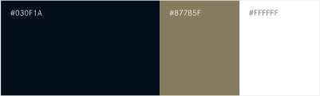

- 概要
宿場を改装した旅館「草津本陣 旅館七宝」の仮想ウェブサイトを制作しました。
実在する草津本陣資料館を元に、事実と仮想を織り交ぜて構成しています。⚫︎detail
当旅館は、江戸時代から草津市に残る歴史的な建物を活用した宿泊施設です。
滋賀県草津市は、市の花「アオバナ」を友禅染や絞染に活用してきた文化があり、江戸時代より染織の技術が親しまれてきました。
この歴史的背景を受け、旅館のテーマカラーには時代を象徴する「藍染めの青」を採用しています。
また、旅館のかつての当主である「田中七左衛門」という名にちなみ、染織で広く使われる「七宝模様」をコンセプトに取り入れました。
七宝模様は、人と人との関係が無限につながるという意味を持ち、古来より縁起の良い模様として親しまれてきました。
これらの歴史や文化を反映させ、「草津本陣 旅館七宝」と名付けました。
- ターゲット
- 30代以降の歴史文化を愛好する旅行客
- 目的
- 有形文化財への宿泊が貴重な体験であることを強調する。
歴史・文化愛好者が求める体験や背景を伝えるアプローチを採用する。
- 情報設計
- ターゲット層に合わせて、トップページには旅館が歩んできたストーリーを感じられる文章を各所に設計しました。
テキスト量が多くなってしまうため、何を伝えるセクションであるのかを明確にする目的で、それぞれにリード文を配置しています。
各コンテンツへすぐにアクセスできるようヘッダーは追従させ、ハンバーガーメニューからどのページにもすぐに遷移できる構成にしました。
- デザイン
-
草津市にゆかりのある染織産業。その発展の始まりである江戸時代から残る建物であることをふまえ、時代を象徴する「藍染めの青」をテーマカラーに採用しました。
青は知的で信頼感のあるイメージを与え、サブカラーには高級感を重視した金を連想させる黄土色を取り入れました。
歴史的なコンセプトを表現するため、リード文や説明文を縦書き主体に設計しました。[配色]
[ロゴデザイン]
草津市の市の花「アオバナ」と染織で親しまれてきた七宝模様を組み合わせ、 歴史的な雰囲気を演出できる家紋風のロゴを制作しました。
- 制作期間
-
-
企画 / ワイヤーフレーム
2週間
-
デザイン
1週間
-
コーディング
10日
-
- 使用ツール
- Illustrator / Photoshop (Adobe Firefly) / Visual Studio Code
- 使用フォント
- 筑紫Aオールド明朝 Pr6N D / ZENオールド明朝
- 備考
- 画像はAdobe Fireflyの生成AIにて作成


 ">
">